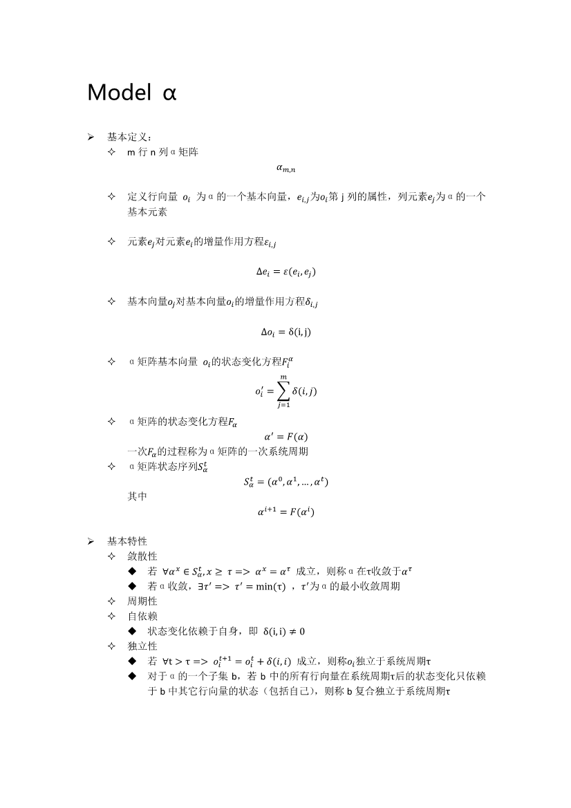
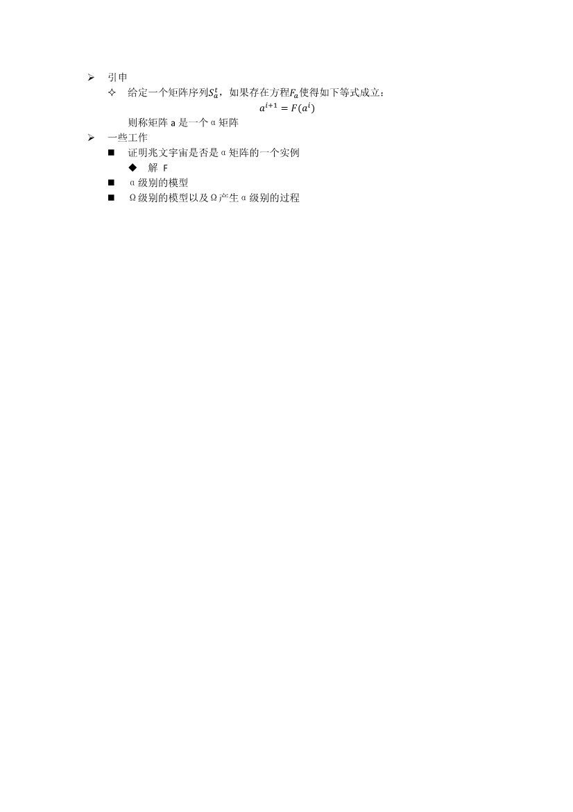

Model α
 
八云哲学体系的世界观基于哥德尔不完备性定理分割有序（因果）世界与无序（混沌）世界。而有序世界与无序世界的总和通过称之为void的名词所包裹。无序世界与void在八云哲学体系的世界架构中是存在的，但是通过数学工具只能探索有序世界中的知识。
有序世界的所有构成形式都可以被抽象为“物质及其相互作用”，每一个有序世界都可以由一个自洽的数学模型来表述。有序世界之间的边界是相互作用——任意两个有序世界一旦建立任意形式的相互作用，那么这两个有序世界应当可以使用统一的数学模型表述，意即这两个有序世界可以被认为是一个更广泛的有序世界的一部分。
从14年12月份开始，困扰于一些基本的工程问题——比如简单的文档分类，以及程序的模块化等…以及实际上存在了很久的涉及一些更为根源的事情，我开始了现在称之为“八云哲学体系”的探索。
这个名字看上去起的有点大，然而如果与困扰比起来，感觉其触及的范畴也不为过。出于对紫妈~@#@~的欣赏，便加了一个“八云”的开头。关于命名差不多就这样。需要提到的是，这个过程实际上是极为艰难的过程——是我至今以来做的最为艰苦的探索，无论是精神上还是体力上。根源的问题从一些简单的事物出发，所触及的面却极为广阔。看似有所联系又让人捉摸不透。一方面我们需要极大程度的抽象以避免失去其普适性，在一些层面上甚至数学都无法作为我们的工具——而另一方面，我们又需要避免理论过于空泛。既然从事工程的工作，那最终还是期望其可以用于指导工程的。
这一过程最为困扰的地方在于，在刚开始的时候，我甚至并不清楚真正的问题是什么——恰当的问题引导恰当的答案。然而又无法忽视不理——工程的一些具体技术，比如一个前端的库或者topic，一个周末便可以基本了解。后端服务，系统运维大抵差不多。问题基本上是看得到的，那么无非即是时间的长短问题。一些问题我可以暂且搁置，然而体系所面临的却无法。
B站A叔有描述其创作的key社经典曲目串烧的过程，大抵如此。探索哲学体系——尤其是在根源的抽象层面，必须十分小心谨慎。这一阶段通常会问的一个问题是，嘿~你在做什么？你的问题是什么？
要十分感谢小黑、苏进生、锐涛&miss M，在这个过程所做的交流。今天，我们可以谨慎地宣告，哲学体系的基本世界观已经基本成型。它提供了一种看待世界的方式，并且将在未来逐渐尝试指导工程学及其他领域的实践。它应当是足够普适与开放的，并且处于不断完善的过程。
2016/3/1